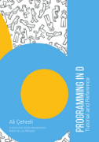

Report a bug
If you spot a problem with this page, click here to create a Bugzilla issue.
Improve this page
Quickly fork, edit online, and submit a pull request for this page.
Requires a signed-in GitHub account. This works well for small changes.
If you'd like to make larger changes you may want to consider using
a local clone.
Programming in D
This is Ali Çehreli's book on D programming. Ali's pedagogical skills are renowned in the D community, for good reason. This book has hooks for many different fish - as well as being a careful and paced guide for programmers who are new to the D Programming language, it is also a useful reference for D practitioners, and even a perspicacious tutorial for people new to programming entirely. If you enjoy this book and would like to thank Ali financially, a Gumroad link is included below where you can buy this book on a pay-what-you-want basis. Enjoy!

ISBNs
978-0-692-59943-3 hardcover by IngramSpark
978-0-692-52957-7 paperback by IngramSpark
978-1-515-07460-1 paperback by CreateSpace
978-1-519-95441-1 ePUB by Draft2Digital
These options have different prices, shipping times, shipping costs, customs and other fees, availability at local book stores, etc.
Also available as pay-what-you-want eBooks at Gumroad and free here as PDF, EPUB, AZW3, and MOBI.
Click here to download code samples as a .zip file.
Online version
- Foreword by Andrei Alexandrescu
- Preface
- The Hello World Program
main - writeln and write
- Compilation
- Fundamental Types
char int double (and more) - Assignment and Order of Evaluation
= - Variables
- Standard Input and Output Streams
stdin stdout - Reading from the Standard Input
- Logical Expressions
bool true false ! == != < <= > >= || && - if Statement
if else - while Loop
while continue break - Integers and Arithmetic Operations
++ -- + - * / % ^^ += -= *= /= %= ^^= - Floating Point Types
.nan .infinity isNaN - Arrays
[] .length ~ ~= - Characters
char wchar dchar - Slices and Other Array Features
.. $ .dup capacity - Strings
char[] wchar[] dchar[] string wstring dstring - Redirecting Standard Input and Output Streams
- Files
File - auto and typeof
auto typeof - Name Scope
- for Loop
for - Ternary Operator ?:
?: - Literals
- Formatted Output
writef writefln - Formatted Input
- do-while Loop
do while - Associative Arrays
.keys .values .byKey .byValue .byKeyValue .get .remove in - foreach Loop
foreach .byKey .byValue .byKeyValue - switch and case
switch, case, default, final switch - enum
enum .min .max - Functions
return void - Immutability
enum const immutable .dup .idup - Value Types and Reference Types
& - Function Parameters
in out ref inout lazy scope shared - Lvalues and Rvalues
auto ref - Lazy Operators
- Program Environment
main stderr - Exceptions
throw try catch finally - scope
scope(exit) scope(success) scope(failure) - assert and enforce
assert enforce - Unit Testing
unittest - Contract Programming
in out - Lifetimes and Fundamental Operations
- The null Value and the is Operator
null is !is - Type Conversions
to assumeUnique cast - Structs
struct . {} static, static this, static ~this - Variable Number of Parameters
T[]... __MODULE__ __FILE__ __LINE__ __FUNCTION__ (and more) - Function Overloading
- Member Functions
toString - const ref Parameters and const Member Functions
const ref, in ref, inout - Constructor and Other Special Functions
this ~this this(this) opAssign @disable - Operator Overloading
opUnary opBinary opEquals opCmp opIndex (and more) - Classes
class new - Inheritance
: super override abstract - Object
toString opEquals opCmp toHash typeid TypeInfo - Interfaces
interface static final - destroy and scoped
destroy scoped - Modules and Libraries
import, module, static this, static ~this - Encapsulation and Protection Attributes
private protected public package - Universal Function Call Syntax (UFCS)
- Properties
- Contract Programming for Structs and Classes
invariant - Templates
- Pragmas
- alias and with
alias with - alias this
alias this - Pointers
* & - Bit Operations
~ & | ^ >> >>> << - Conditional Compilation
debug, version, static if, static assert, __traits - is Expression
is() - Function Pointers, Delegates, and Lambdas
function delegate => toString - foreach with Structs and Classes
opApply empty popFront front (and more) - Nested Functions, Structs, and Classes
static - Unions
union - Labels and goto
goto - Tuples
tuple Tuple AliasSeq .tupleof foreach - More Templates
template opDollar opIndex opSlice - More Functions
inout pure nothrow @nogc @safe @trusted @system CTFE __ctfe - Mixins
mixin - Ranges
InputRange ForwardRange BidirectionalRange RandomAccessRange OutputRange - More Ranges
isInputRange ElementType hasLength inputRangeObject (and more) - static foreach
- Parallelism
parallel task asyncBuf map amap reduce - Message Passing Concurrency
spawn thisTid ownerTid send receive (and more) - Data Sharing Concurrency
synchronized, shared, shared static this, shared static ~this - Fibers
call yield - Memory Management
calloc realloc emplace destroy .alignof - User Defined Attributes (UDA)
@ - Operator Precedence
Copyright © 1999-2024 by the D Language Foundation | Page generated by
Ddoc on Mon Jan 29 20:59:49 2024